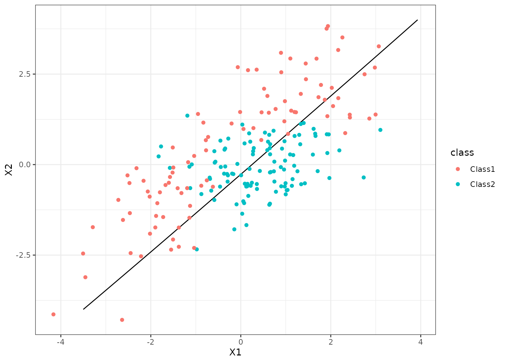

brulee_mlp() fits neural network models using stochastic gradient
descent. Multiple layers can be used.
brulee_mlp(x, ...)
# S3 method for default
brulee_mlp(x, ...)
# S3 method for data.frame
brulee_mlp(
x,
y,
epochs = 100L,
hidden_units = 3L,
activation = "relu",
penalty = 0.001,
dropout = 0,
validation = 0.1,
learn_rate = 0.01,
momentum = 0,
batch_size = NULL,
class_weights = NULL,
stop_iter = 5,
verbose = FALSE,
...
)
# S3 method for matrix
brulee_mlp(
x,
y,
epochs = 100L,
hidden_units = 3L,
activation = "relu",
penalty = 0.001,
dropout = 0,
validation = 0.1,
learn_rate = 0.01,
momentum = 0,
batch_size = NULL,
class_weights = NULL,
stop_iter = 5,
verbose = FALSE,
...
)
# S3 method for formula
brulee_mlp(
formula,
data,
epochs = 100L,
hidden_units = 3L,
activation = "relu",
penalty = 0.001,
dropout = 0,
validation = 0.1,
learn_rate = 0.01,
momentum = 0,
batch_size = NULL,
class_weights = NULL,
stop_iter = 5,
verbose = FALSE,
...
)
# S3 method for recipe
brulee_mlp(
x,
data,
epochs = 100L,
hidden_units = 3L,
activation = "relu",
penalty = 0.001,
dropout = 0,
validation = 0.1,
learn_rate = 0.01,
momentum = 0,
batch_size = NULL,
class_weights = NULL,
stop_iter = 5,
verbose = FALSE,
...
)Arguments
- x
Depending on the context:
A data frame of predictors.
A matrix of predictors.
A recipe specifying a set of preprocessing steps created from
recipes::recipe().
The predictor data should be standardized (e.g. centered or scaled).
- ...
Not currently used, but required for extensibility.
- y
When
xis a data frame or matrix,yis the outcome specified as:A data frame with 1 column (numeric or factor).
A matrix with numeric column (numeric or factor).
A vector (numeric or factor).
- epochs
An integer for the number of epochs of training.
- hidden_units
An integer for the number of hidden units, or a vector of integers. If a vector of integers, the model will have
length(hidden_units)layers each withhidden_units[i]hidden units.- activation
A string for the activation function. Possible values are "relu", "elu", "tanh", and "linear". If
hidden_unitsis a vector,activationcan be a character vector with length equals tolength(hidden_units)specifying the activation for each hidden layer.- penalty
The amount of weight decay (i.e., L2 regularization).
- dropout
The proportion of parameters set to zero.
- validation
The proportion of the data randomly assigned to a validation set.
- learn_rate
A positive number that controls the rapidity that the model moves along the descent path. Values around 0.1 or less are typical.
- momentum
A positive number usually on
[0.50, 0.99]for the momentum parameter in gradient descent.- batch_size
An integer for the number of training set points in each batch.
- class_weights
Numeric class weights (classification only). The value can be:
A named numeric vector (in any order) where the names are the outcome factor levels.
An unnamed numeric vector assumed to be in the same order as the outcome factor levels.
A single numeric value for the least frequent class in the training data and all other classes receive a weight of one.
- stop_iter
A non-negative integer for how many iterations with no improvement before stopping.
- verbose
A logical that prints out the iteration history.
- formula
A formula specifying the outcome term(s) on the left-hand side, and the predictor term(s) on the right-hand side.
- data
When a recipe or formula is used,
datais specified as:A data frame containing both the predictors and the outcome.
Value
A brulee_mlp object with elements:
models_obj: a serialized raw vector for the torch module.estimates: a list of matrices with the model parameter estimates per epoch.best_epoch: an integer for the epoch with the smallest loss.loss: A vector of loss values (MSE for regression, negative log- likelihood for classification) at each epoch.dim: A list of data dimensions.y_stats: A list of summary statistics for numeric outcomes.parameters: A list of some tuning parameter values.blueprint: Thehardhatblueprint data.
Details
This function fits feed-forward neural network models for regression (when the outcome is a number) or classification (a factor). For regression, the mean squared error is optimized and cross-entropy is the loss function for classification.
When the outcome is a number, the function internally standardizes the outcome data to have mean zero and a standard deviation of one. The prediction function creates predictions on the original scale.
By default, training halts when the validation loss increases for at least
step_iter iterations. If validation = 0 the training set loss is used.
The predictors data should all be numeric and encoded in the same units (e.g. standardized to the same range or distribution). If there are factor predictors, use a recipe or formula to create indicator variables (or some other method) to make them numeric. Predictors should be in the same units before training.
The model objects are saved for each epoch so that the number of epochs can
be efficiently tuned. Both the coef() and predict() methods for this
model have an epoch argument (which defaults to the epoch with the best
loss value).
Examples
# \donttest{
if (torch::torch_is_installed()) {
## -----------------------------------------------------------------------------
# regression examples (increase # epochs to get better results)
data(ames, package = "modeldata")
ames$Sale_Price <- log10(ames$Sale_Price)
set.seed(122)
in_train <- sample(1:nrow(ames), 2000)
ames_train <- ames[ in_train,]
ames_test <- ames[-in_train,]
# Using matrices
set.seed(1)
fit <-
brulee_mlp(x = as.matrix(ames_train[, c("Longitude", "Latitude")]),
y = ames_train$Sale_Price,
penalty = 0.10, batch_size = 2^8)
# Using recipe
library(recipes)
ames_rec <-
recipe(Sale_Price ~ Bldg_Type + Neighborhood + Year_Built + Gr_Liv_Area +
Full_Bath + Year_Sold + Lot_Area + Central_Air + Longitude + Latitude,
data = ames_train) %>%
# Transform some highly skewed predictors
step_BoxCox(Lot_Area, Gr_Liv_Area) %>%
# Lump some rarely occurring categories into "other"
step_other(Neighborhood, threshold = 0.05) %>%
# Encode categorical predictors as binary.
step_dummy(all_nominal_predictors(), one_hot = TRUE) %>%
# Add an interaction effect:
step_interact(~ starts_with("Central_Air"):Year_Built) %>%
step_zv(all_predictors()) %>%
step_normalize(all_numeric_predictors())
set.seed(2)
fit <- brulee_mlp(ames_rec, data = ames_train, hidden_units = 20,
dropout = 0.05, batch_size = 2^8)
fit
autoplot(fit)
library(ggplot2)
predict(fit, ames_test) %>%
bind_cols(ames_test) %>%
ggplot(aes(x = .pred, y = Sale_Price)) +
geom_abline(col = "green") +
geom_point(alpha = .3) +
lims(x = c(4, 6), y = c(4, 6)) +
coord_fixed(ratio = 1)
library(yardstick)
predict(fit, ames_test) %>%
bind_cols(ames_test) %>%
rmse(Sale_Price, .pred)
}
#> # A tibble: 1 × 3
#> .metric .estimator .estimate
#> <chr> <chr> <dbl>
#> 1 rmse standard 0.0871
# ------------------------------------------------------------------------------
# classification
library(dplyr)
library(ggplot2)
data("parabolic", package = "modeldata")
set.seed(1)
in_train <- sample(1:nrow(parabolic), 300)
parabolic_tr <- parabolic[ in_train,]
parabolic_te <- parabolic[-in_train,]
set.seed(2)
cls_fit <- brulee_mlp(class ~ ., data = parabolic_tr, hidden_units = 2,
epochs = 200L, learn_rate = 0.1, activation = "elu",
penalty = 0.1, batch_size = 2^8)
autoplot(cls_fit)

grid_points <- seq(-4, 4, length.out = 100)
grid <- expand.grid(X1 = grid_points, X2 = grid_points)
predict(cls_fit, grid, type = "prob") %>%
bind_cols(grid) %>%
ggplot(aes(X1, X2)) +
geom_contour(aes(z = .pred_Class1), breaks = 1/2, col = "black") +
geom_point(data = parabolic_te, aes(col = class))
 # }
# }